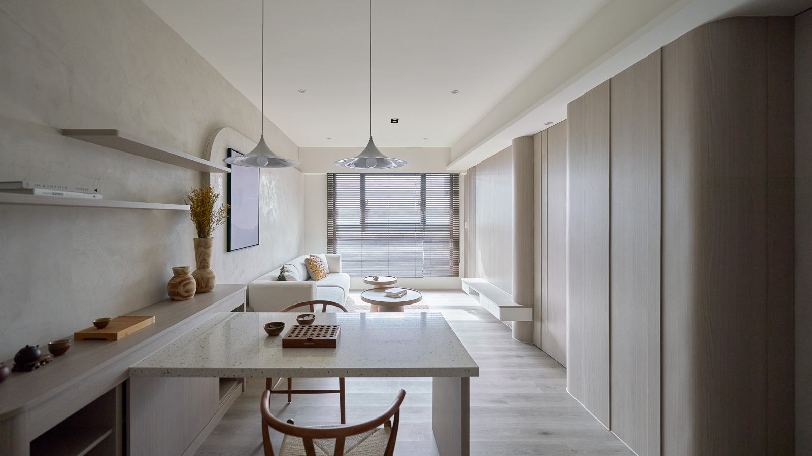
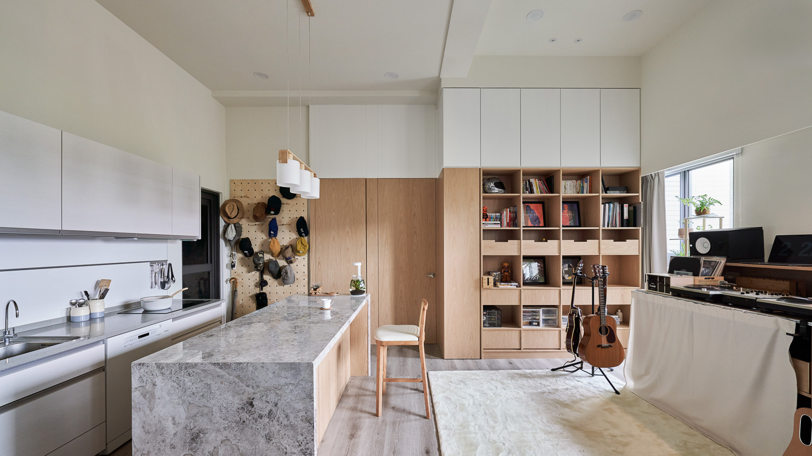
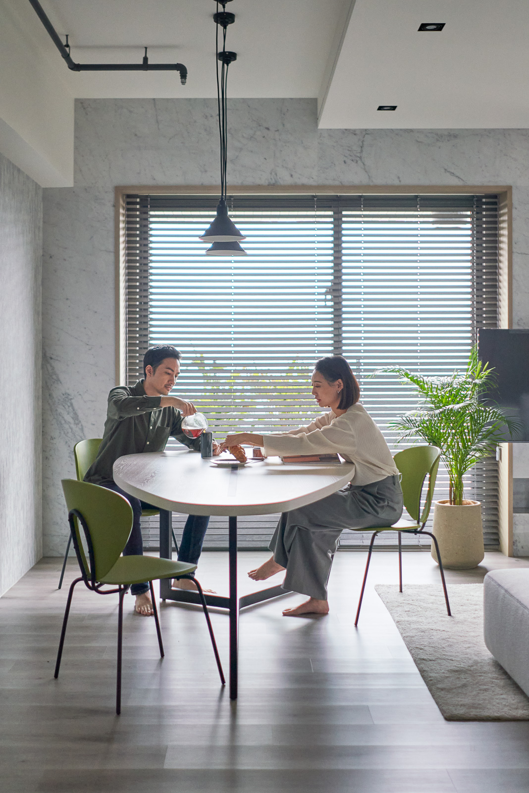
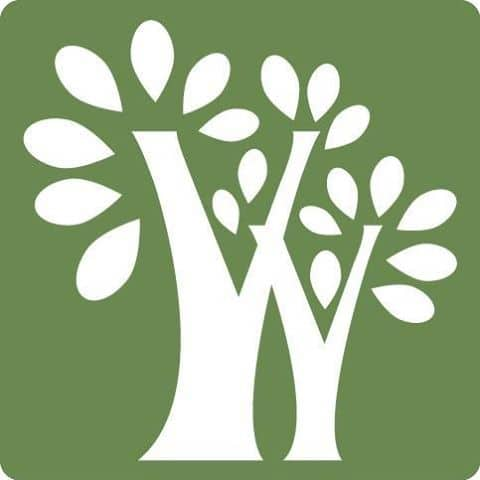
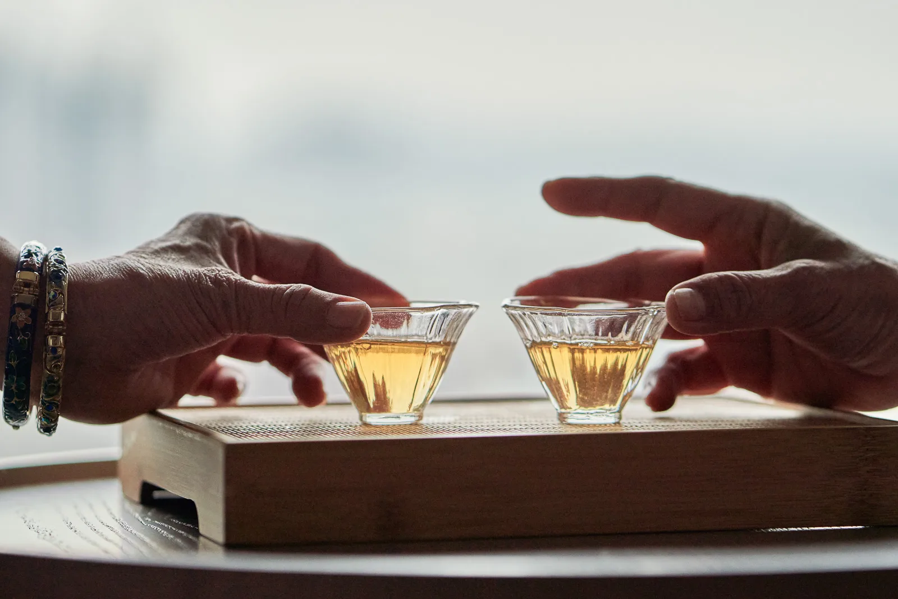
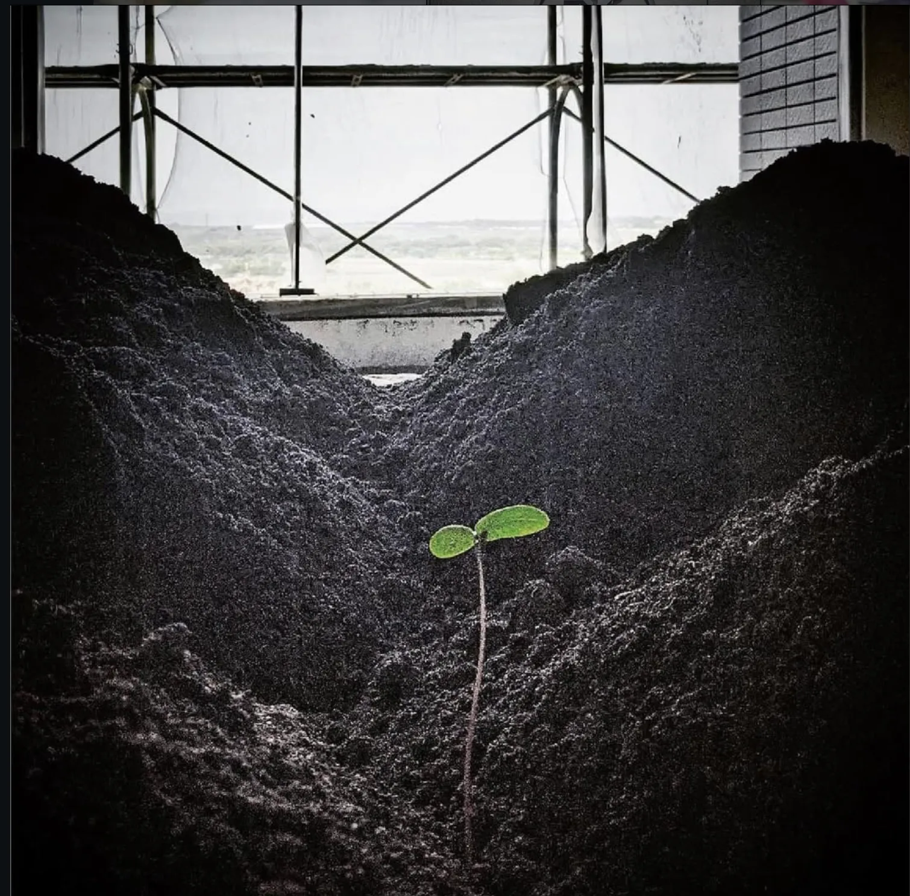
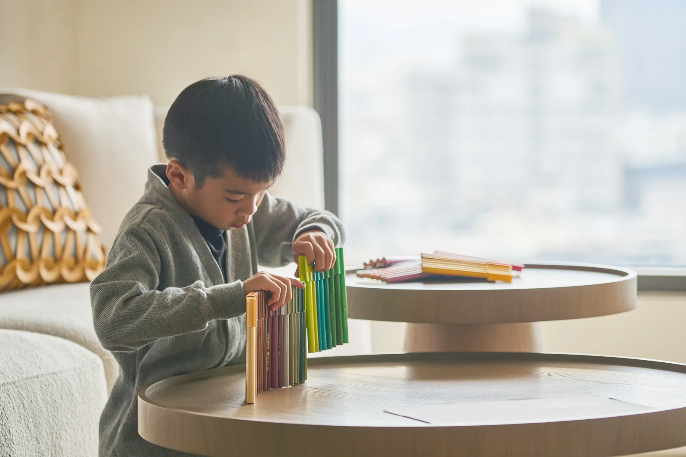
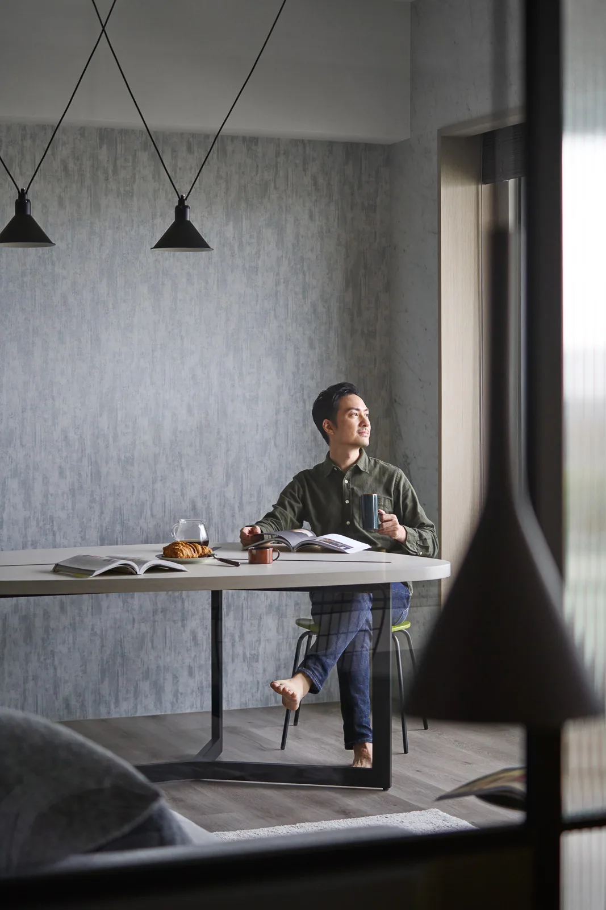
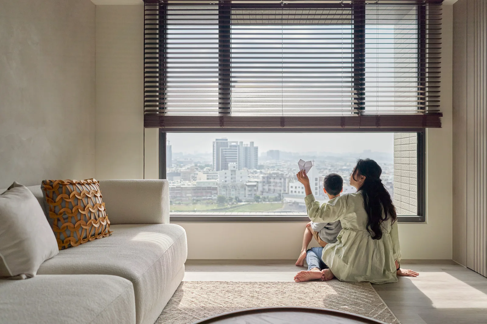
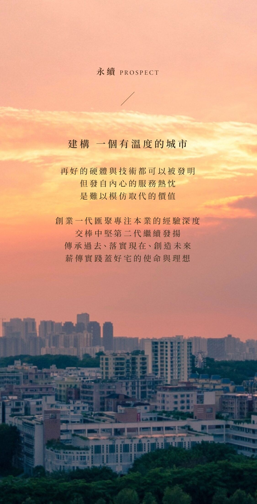

冠億建設



冠億建設建築是生活的容器
ARCHITECTURE IS A VESSELFOR YOUR LIVING.
理念ETHOS
一開始就決定走不同的路
一次只專注一個案子
因為深信唯有專一才能凝神
把建築做好
是再自然不過的事

本質ESSENTIAL
選擇是一種智慧
能做豪宅，是一種能力
不做首購，是一種定位
冠億將住宅設定為菁英人士首選
他們是各領域專家，對生活品質要求不低
他們看得見愈細微，愈見不凡的品味
我們專注在這領域，自然與他們產生契合

冠偉營造
甲級營造
嚴密把關的工程舵手

冠億建設
本著打造質感住宅的初衷
量少質精
推案節奏寧慢不求快
堅持慢工讓細活

營建思維再升級
從土地的開發起
到建築規劃、營造施工等
從使用者出發
做精做細、認真每個細節

轉型精緻建築風格
每一塊土地都得來不易
都有它的故事
更加應該用誠實的好品質
讓立於其上的建築繼續為子孫遮風避雨
冠億再進化
堅持對品質品味的用心與努力
致力成為最好的營建商
成就實用、安全、美感兼具的建築事業團隊
歷程JOURNEY

冠億建設
建築是生活的容器
ARCHITECTURE IS A VESSEL FOR YOUR LIVING.理念ETHOS
一磚一瓦
決定不同的路
一次專業進一個案子，因為深信每一磚一瓦，都能堆砌好，與日常不同的事。
本質ESSENTIAL
選擇，是一種智慧
能激發它，是一種能力。不盲目隨意，一種定位；讓經營住宅變成人與家人互動，他們是各領域專家，對生活品質要求不懈。
歷程JOURNEY
永續 PROSPECT
建構一個有溫度的城市
再好的硬體與技術都可以被發明，但發自內心的服務熱忱是難以被取代的價值。
創業一代匯聚專注本業的經驗深度，交棒中堅第二代繼續發揚，
傳承過去、落實現在、創造未來，薪傳實踐蓋好宅的使命與理想。